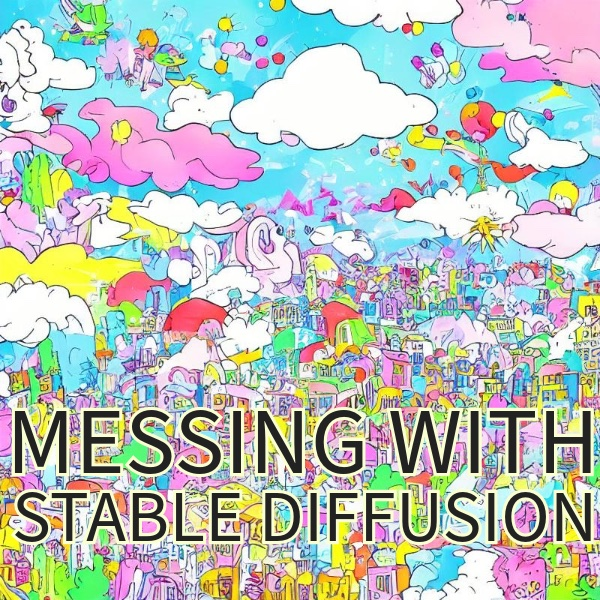

Messing around with Hugging Face’s Stable Diffusion
This summer I got a new laptop (Macbook Pro M2) that is capable enough to run stable diffusion locally. I finally got around to trying it out. This post is mainly notes to self, and a few pictures of processing my own drawing through the system.

There’s a host of issues with these pattern generation tools in general, especially for models that were unscrupulously trained on large sets of image data. It’s not clear to me how absolved stable diffusion is from these issues. Nevertheless, I’m trying out their tools, which are open source.
So far I’ve only tried the text-to-image, and image-to-image pipelines using the stable-diffusion-v1-5 model.
I really like that the training image dataset is also open-source. It would take a while to actually look at the billions of images in there, but they appear to be reviewable in principle, which is much more than can be said for other tools in this space.
https://laion.ai/blog/laion-5b/
Getting set up
The time to get everything installed and working was surprisingly fast (half a morning). Surprising to me because I’m all thumbs at python.
Here’s some breadcrumbs on what I did.
started with this datacamp tutorial for a bit https://www.datacamp.com/tutorial/how-to-run-stable-diffusion
fumbled with getting python installed on my mac.
- I was surprised it wasn’t already there, but it seems apple removed python
- I downloaded it from the python website, but then learned that might be a bad way to do it…
- I also installed it using pyenv https://opensource.com/article/19/5/python-3-default-mac
also had to get homebrew working https://brew.sh
One use-case I have is to generate visual stimuli for cognitive psych experiments, and I wanted to be able to do this programmatically using scripts. The datacamp tutorial was leading toward a GUI interface that was not for me. Fortunately, I started reading the hugging face documentation and went from there.
I also live in the land of R and do most of my writing (like this blog) using Quarto. Rstudio is my main editor and it’s been ages since I used python for anything, and I never really learned it that well in the first place. Despite my shortcomings, Rstudio supports R and python code chunks in quarto documents, so I was eager to find out whether I could get stable diffusion working as a script inside a quarto document in Rstudio. It worked.
read through the Stable Diffusion v1-5 Model Card instructions https://huggingface.co/runwayml/stable-diffusion-v1-5
Installed the Diffusers library https://github.com/huggingface/diffusers
Noted how to modify scripts for apple silicon https://huggingface.co/docs/diffusers/optimization/mps
- using the “mps” option
I popped this script into a quarto python code chunk and ran it:
from diffusers import DiffusionPipeline
pipe = DiffusionPipeline.from_pretrained("runwayml/stable-diffusion-v1-5")
pipe = pipe.to("mps")
# Recommended if your computer has < 64 GB of RAM
pipe.enable_attention_slicing()
prompt = "a photo of an astronaut riding a horse on mars"
# First-time "warmup" pass if PyTorch version is 1.13 (see explanation above)
_ = pipe(prompt, num_inference_steps=1)
# Results match those from the CPU device after the warmup pass.
image = pipe(prompt).images[0]It took a couple minutes because it was downloading several gigabytes worth of model weights and caching them. But, impressively, once everything loaded, it only took 25 seconds to generate the astronaut picture.
It is possible to download the model weights, which is what I did next.
https://huggingface.co/docs/diffusers/using-diffusers/loading#local-pipeline
It took about 20 minutes for everything to get downloaded.
Last, read over the text-to-image, and image-to-image documentation and started messing about.
text-to-image
Here’s the script I used to generate an image from a prompt.
from diffusers import DiffusionPipeline
# folder location of the model
repo_id = "./stable-diffusion-v1-5"
# loader
pipe = DiffusionPipeline.from_pretrained(repo_id, safety_checker=None)
# use apple silicon
pipe = pipe.to("mps")
# Recommended if your computer has < 64 GB of RAM
pipe.enable_attention_slicing()
prompt = "A cat dressed as a detective"
image = pipe(prompt,height = 400,width = 400,num_images_per_prompt = 4)
image_save = image.images[0].save("cat_0.jpg")
image_save = image.images[1].save("cat_1.jpg")
image_save = image.images[2].save("cat_2.jpg")
image_save = image.images[3].save("cat_3.jpg")txt2img then img2img
The txt2img pipeline creates an image from a text prompt. The img2img pipeline starts from an image, and makes another image from a prompt and the starting image. I used a script like this to have both possibilities going.
from diffusers import StableDiffusionPipeline, StableDiffusionImg2ImgPipeline
from PIL import Image
#folder location of the model
model_id = "./stable-diffusion-v1-5"
# load txt2img
stable_diffusion_txt2img = StableDiffusionPipeline.from_pretrained(model_id, safety_checker=None, use_safetensors=True)
# save components so they can be reused for img2img
# saves RAM
components = stable_diffusion_txt2img.components
# load img2img
stable_diffusion_img2img = StableDiffusionImg2ImgPipeline(**components)
# send to apple silicon
stable_diffusion_txt2img = stable_diffusion_txt2img.to("mps")
stable_diffusion_img2img = stable_diffusion_img2img.to("mps")
# Recommended if your computer has < 64 GB of RAM
stable_diffusion_txt2img.enable_attention_slicing()
stable_diffusion_img2img.enable_attention_slicing()
prompt = "a cat dressed up as a detective chief inspector"
# generate image from text2img
image = stable_diffusion_txt2img(prompt,height = 400,width = 400,num_images_per_prompt = 1)
# run to show image
image.images[0].show()
# optional load external jpg
load_image = Image.open("your_image.jpeg")
# img2img, need a starting image
new_image = stable_diffusion_img2img(prompt="cartoon art style ",
image=image.images[0],
strength = .9,
num_inference_steps = 20,
guidance_scale = 7,
num_images_per_prompt = 5)
new_image.images[0].show()Messing with my own drawings
The following are some examples of inputting a starting image that I made, and then generating variations from this starting image using stable diffusion.
The upper left is the starting image. The prompt direction was to make colorful objects.
No prompt direction, used a “space” in the prompt and let it take “inference steps” from the starting image.

Prompt direction was to make colorful little towns
And, a last go with a longer prompt.

That’s it for now, must get on with the day.